集成绘图
1. 操作流程
-
确定要绘制的图片，例如：虚拟内存布局图
-
让 ChatGPT 帮你绘图，例如：请使用 Mermaid 绘制虚拟内存布局图
-
粘贴 ChatGPT 的回答到文档中
-
预览编辑调整发布
请使用 Mermaid 绘制上述逻辑的流程图：
操作流程图
graph TB; A(确定要绘制的图片)-->B(让 ChatGPT 帮你绘图); B-->C(粘贴 ChatGPT 的回答到文档中); C-->D(预览编辑发布);
文本绘图工具是基础，ChatGPT 辅助文本输入，AsciiDoc 展示图片输出。
2. 文本绘图工具
有一些文本绘图工具可以用于创建图表，以下是其中比较流行的选择：
- Mermaid
-
这是一个 JavaScript 库，用于绘制流程图、序列图、类图和甘特图等。它也可以通过在 AsciiDoc 中编写 Mermaid 代码来创建图表。
- PlantUML
-
这是一个基于文本的绘图工具，可以创建各种类型的图表，包括类图、时序图和用例图等。它可以通过在 AsciiDoc 中编写 PlantUML 代码来创建图表。
- Graphviz
-
这是一个基于命令行的绘图工具，可以创建各种类型的图表，如流程图、组织结构图和状态转换图等。在 AsciiDoc 中，可以使用 Graphviz 语法来创建图表。
| star 统计日期为 2023-04-21。 |
此类文本绘图工具擅长绘制 UML 类软件图。
2.1. Mermaid
安装 Mermaid 命令行工具。
# 安装 mermaid-cli
npm install -g @mermaid-js/mermaid-cli
# 进入文档目录
cd docs/antora/modules/ROOT
# 生成操作系统加载 ELF 流程图
mmdc -i examples/draw/elf.mmd -o assets/images/draw/elf.mmd.svg| 更多内容请参考 mermaid-cli。 |
源文件文本内容如下：
graph TB
A[操作系统] --> B(加载elf文件)
B --> C{检查文件头}
C -- 文件头正确 --> D{创建进程}
D --> E(加载程序段)
E --> F{检查符号表}
F -- 符号表正确 --> G(解析符号表)
G --> H{重定位代码}
H -- 重定位成功 --> I{启动进程}
I --> J(程序执行)
C -- 文件头错误 --> K(加载失败)
F -- 符号表错误 --> K(加载失败)
H -- 重定位失败 --> K(加载失败)
K --> L[结束进程]目标文件图片展示如下：

3. ChatGPT 辅助输入
ChatGPT 本身不能直接绘图，但 ChatGPT 可以生成一些文本绘图工具要求的源文件内容。源文件内容必须是基于文本的，如果是基于二进制的则不行，例如：ppt、graffle 等。
5. 集成到 Asciidoctor
在 Asciidoctor 生成文档过程中，通过插件调用绘图工具生成图片，然后将图片引用到文档中。
#安装绘图插件
sudo gem install asciidoctor-diagram
# Fetching asciidoctor-diagram-plantuml-1.2023.5.gem
# Fetching asciidoctor-diagram-2.2.7.gem
# Fetching asciidoctor-diagram-ditaamini-1.0.3.gem
# Successfully installed asciidoctor-diagram-ditaamini-1.0.3
# Successfully installed asciidoctor-diagram-plantuml-1.2023.5
# Successfully installed asciidoctor-diagram-2.2.7
# Parsing documentation for asciidoctor-diagram-ditaamini-1.0.3
# Installing ri documentation for asciidoctor-diagram-ditaamini-1.0.3
# Parsing documentation for asciidoctor-diagram-plantuml-1.2023.5
# Installing ri documentation for asciidoctor-diagram-plantuml-1.2023.5
# Parsing documentation for asciidoctor-diagram-2.2.7
# Installing ri documentation for asciidoctor-diagram-2.2.7
# Done installing documentation for asciidoctor-diagram-ditaamini, asciidoctor-diagram-plantuml, asciidoctor-diagram after 0 seconds
# 3 gems installed
#获取 draw-test.adoc
wget https://raw.githubusercontent.com/peacetrue/learn-asciidoc/master/docs/antora/modules/ROOT/pages/draw-test.adoc
#不使用绘图插件，无法生成图片
asciidoctor draw-test.adoc
#指定绘图插件，可以自动生成图片
asciidoctor -r asciidoctor-diagram draw-test.adoc| 更多内容请参考 Asciidoctor Diagram。 |
6. 集成到 Antora
#安装 plantuml 插件
npm i -g asciidoctor-plantuml
#安装 kroki 插件
cd /usr/local/lib/node_modules/@antora/site-generator/node_modules/@antora/asciidoc-loader/lib
npm i asciidoctor-kroki
#切换到 antora 文档目录
cd docs/antora
#生成文档
antora generate playbook.yml
# 如果出现以下提示：在 xxx 目录下找不到 asciidoctor-kroki
# [11:04:20.091] FATAL (antora): Cannot find module 'asciidoctor-kroki'
# at path xxx/learn-asciidoc/docs/antora
# or /usr/local/lib/node_modules/@antora/site-generator/node_modules/@antora/asciidoc-loader/lib
# 则到 xxx 目录下执行 npm i asciidoctor-kroki
#使用 Chrome 打开站点
open -a 'Google Chrome' build/site/index.html| 更多内容请参考 asciidoctor-kroki。 |